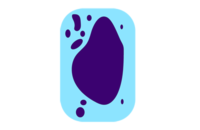
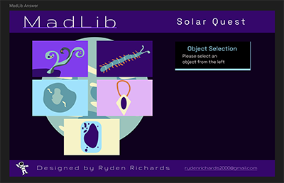
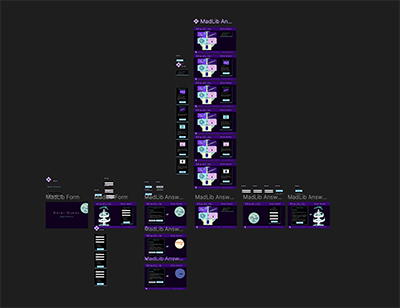

Project Improvements
- Visual Design
- UX/UI
Some improvements were made to the visuals with the additions of a new section that requires users to select an object. The following images are new content for just the Planet 1X5A. More images will be added for the other two planets.

Here you can see how they will be added to the page. These new images will enhance the user's experience through personalization and add an emotional attachment to the game. I chose different colors to give the game a bit more variety with the color scheme so that users will not feel bored.

I created a usability test via Figma which has 1 user flow. The idea is to see if any updates or changes should be made to how I create the extra credit assignment. Below you can see the full scale prototype with one user flow.

Here is the link to my Figma Prototype. See if you can get to planet 1X5A and select the plant item.
Jump to PrototypeI will ask the following interview questions before the test starts: What games do you usually play? What to you makes a good game? What attracts you to the games you like to play? How easy is it for you to play a video game?
I will ask the flowing interview questions during the test: Please feel free to speak up if anything frustrates you. Why did you click that button? Where do you think this button will go? What do you think selecting an image will do?
I will ask the following questions after the test ends: Did you enjoy playing Solar Quest? What frustrations did you encounter? What was your favorite part of the game? What suggestions do you have for additional content? What would you like to see done with this game? Do you have any questions for me?
The first test with Ruben showed that the radio selection buttons are too small and that they need to be more of a feature selection. Another insight from testing Ruben was that understanding what should be done on the image selection screen was a bit difficult. There was also a problem where the user could not go back to the image selection screen once they choose their item.
Perhaps I could add a screen with all three planets appearing which would show the planet selection content as part of a main idea. Ruben suggested I add a hover state to the images so that users understand that they need to select one of the images. After the image selection screen I can add a back button so that if users want to change their mind they do not have to start again. Ruben also suggested adding two to three pictures that the user took on the planet on the last scene.
The second test with Caeley was with a Tablet version. This was a great example of how responsive design changes things. Caeley also found an issue where she could not easily understand to select the planet. Caeley did not like the fact that she could not type into the text boxes on the prototype. She did not understand how the progression of the story carried on as she never felt she landed on the planet. She also wishes she could fly her own ship and that the game was on Roblox.
I think I definitely need to address the planet selection being to small. I think people will overlook the fact that each planet has a different storyline. The actual coded version it will allow users to input their name in a form input field. I wonder if by changing the background of the image selection scene to look like it is on the planet if it would integrate the user more into the story progression? I wonder if I could use animations to similate the fact the the space ship is moving?
The final test was with Asher. Asher participated in the test with a Mobile horizontal version. Asher navigated very easily through the prototype. Similarly he skipped past the part of choosing the planet. He did not see what the first screen was about as he overlooked "Mission Details." He found the image selection a bit confusing and did not know where to start. He also suggested to make the game longer and have small missions to complete throughout the game.
Again choosing the planet section needs to be made more clear. I will seperate this scene into its own frame with each of the three with each planet's mission description. I need to make the headers on the forms have greater hierarchy so that users instantly see what they need to do. I may need to add a different color to the "please choose a image" text in order for users to see the message more clearly. Perhaps by adding animations and by creating planet-like environment background images I can make the game feel longer.
See Full Interviews.